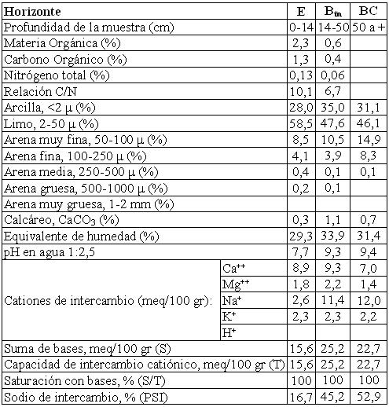

Natrustalf típico, franca fina, mixta, térmica
Capacidad de uso: VIsc
Este suelo se ha desarrollado sobre sedimentos fluviales o aluviales en derrames y terrazas altas o intermedias vinculadas al Río primero en las proximidades de la localidad homónima Se encuentra limitado severamente por la presencia de horizontes degradados superficialmente, alcalinidad sódica y drenaje deficiente. Ocupa sectores identificados en el relieve como “bajos” o bien en planos suavemente deprimidos con escurrimiento lento. Normalmente están vinculados geográficamente a otros suelos de mejor aptitud formando complejos; que se advierten como manchas mas claras en las fotos aéreas coincidiendo en el terreno con muy débil desarrollo de la vegetación natural o antrópica. Presenta un horizonte E (A degradado) desde a superficie que se extiende hasta 14 cm de espesor, con color claro, textura franco limosa, estructura masiva a laminar débil con tendencia a bloques y es un horizonte ligeramente alcalino en perfil modal. Continúa hacia abajo un horizonte subsuperficial enriquecido en arcillas fuertemente sódicas que se extiende hasta la profundidad de 50 cm. Continúa hacia abajo una transición hacia el material parental (loess) también fuertemente alcalino sódico (BC), que se extiende aproximadamente hasta 75 cm de profundidad.
Descripción del perfil típico:
Un perfil representativo de esta serie fue descripto a 9 km al NE de Río Primero, departamento del mismo nombre, provincia de Córdoba.
E 0-14 cm; color en húmedo pardo grisáceo oscuro a pardo grisáceo muy oscuro (10YR3,5/2), franco limoso, masivo con tendencia a bloques, ligeramente firme en húmedo, no plástico, no adhesivo, pH 7,7, raíces escasas, límite inferior abrupto ondulado.
Btn 14-52 cm; color en húmedo pardo oscuro (10YR3/3), franco arcillo limoso, estructura en prismas irregulares medios moderados a fuertes, ligeramente firme en húmedo, plástico, adhesivo, pH 9,3, barnices húmico arcillosos comunes a abundantes en las caras de los agregados, vestigios de raíces, límite inferior gradual.
BC 52-70 cm; color en húmedo pardo amarillento oscuro (10YR4/4), franco arcillo limoso a franco limoso, estructura en prismas y bloques débiles a masivo, friable en húmedo, no plástico, no adhesivo, pH 9,4, escasos barnices medios de arcilla y humus, límite inferior gradual.
C 70 cm a mas; color en húmedo pardo amarillento (10YR5/4), franco limoso (campaña), masivo, muy friable en húmedo, no plástico, no adhesivo, pH mayor de 8,3 (campaña).
Cuadro Nº15
Datos analíticos Serie ESTANCIA DON SANTIAGO
Situación: Latitud: 31º17’S Longitud: 63º33’O Altitud: 220 m.s.n.m.

|